An AI budgeting coach people trust
Tapping a phone doesn't feel like spending, and most budgeting apps only show you what you already spent. Our team built an AI coach that speaks up before you spend, and explains why.
75% of testers completely trusted it!
- My role
- UX Researcher and Designer
- Team
- Brandan, Giselle, Shreeraj and me
- Timeline
- Course project, 2025
- Research
- IRB approved, 24 participants
By the numbers
The short version
Money feels fake
Tapping a card doesn't feel like spending. Budget apps feel like report cards, so people avoid opening them.
Research first, then build
40+ papers, 10 competing apps, 24 IRB-approved participants, 100 ideas cut to 10 features, and two rounds of testing.
Trust through explanation
When the AI showed why it made a suggestion, 75% of testers completely trusted it.
Six steps, from stories to a tested app
I ran the IRB-approved study and designed the AI coach and budgeting flows.
Research: 24 people, real stories
8 one-on-one interviews and 4 focus groups of 4, all under IRB approval. We asked about regretful purchases and how it feels to open a bank app.
- "If my friends are going out, I'm going out too. Even if I had considered staying back."
- "If an app said 'Everyone slips up sometimes' instead of scolding you, it'd feel encouraging."
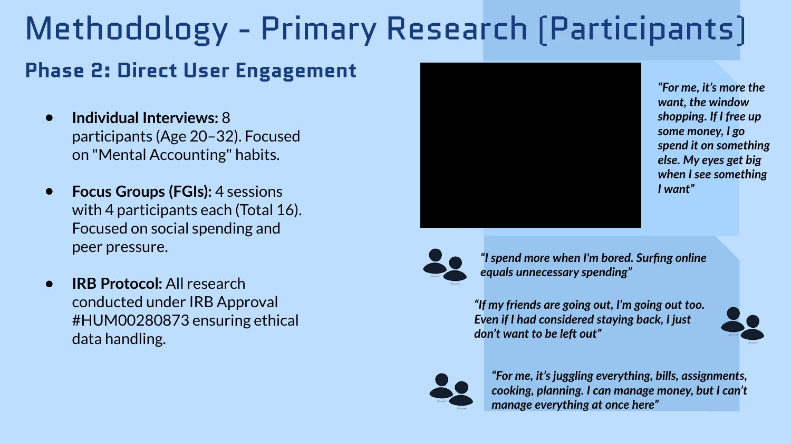
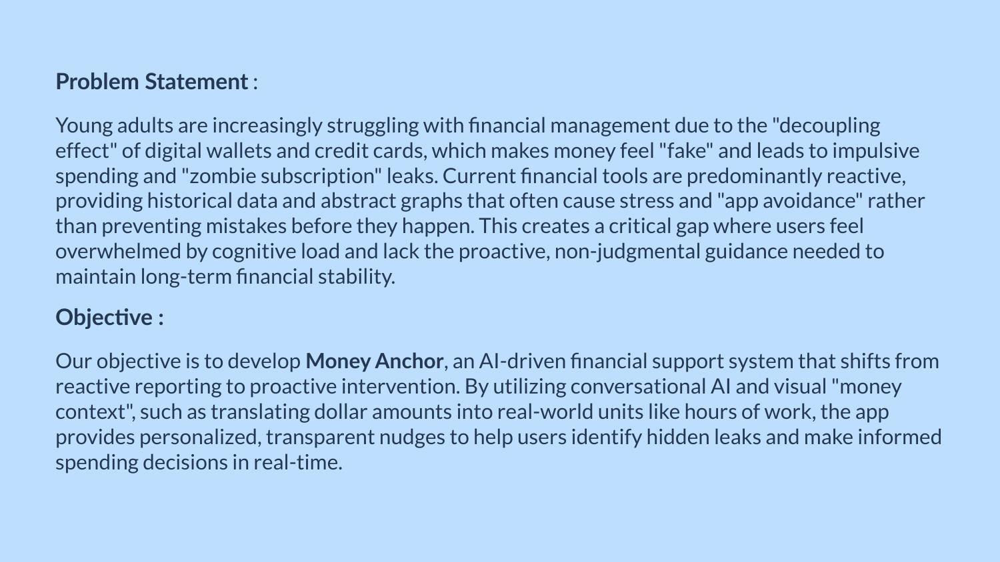
Synthesis: 50+ quotes, 4 themes
- Anxiety: opening a bank app feels like getting a report card.
- No transparency: forgotten subscriptions quietly drain accounts.
- Money feels fake: tapping a phone doesn't feel like paying.
- Guilt and peer pressure: social spending is the biggest budget killer.
Each theme became a requirement: show dollars as hours of work, use a friendly chat instead of scary charts, and support group goals. I used Claude to suggest first-pass themes from the transcripts, then checked every theme against the raw quotes by hand.
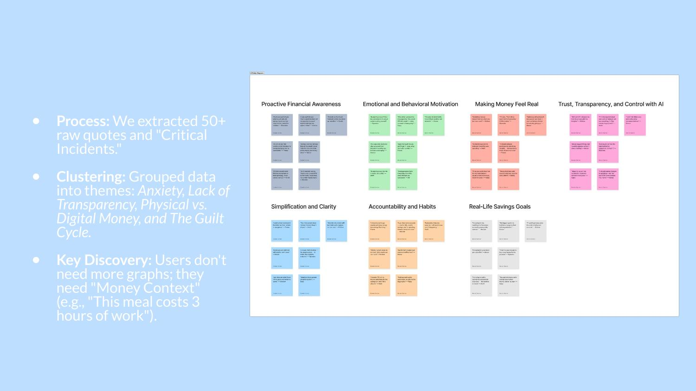
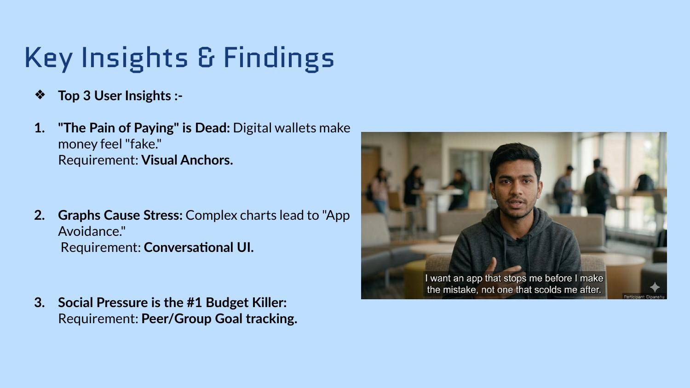
Personas: two very different money habits
- The Anxious Avoider checks her account once a month and needs gentle check-ins, not alarms.
- The Precision Planner wants to see how a $5 coffee today affects a trip six months away.
One tone couldn't serve both, so the AI explains its reasoning instead of giving orders.
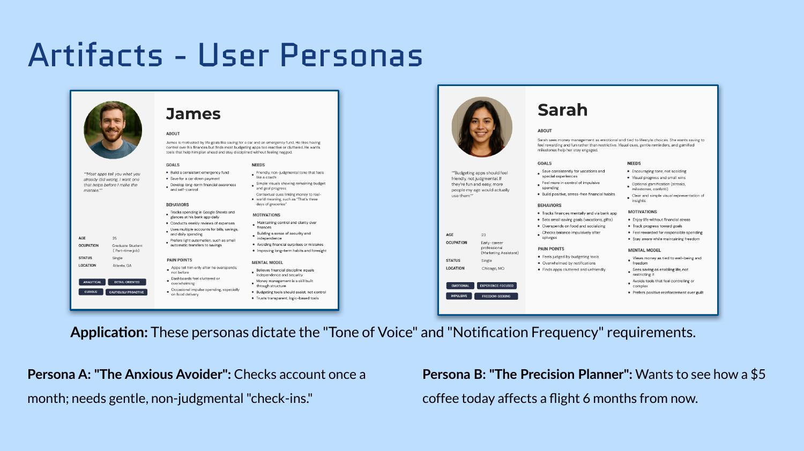
Ideas: 100 ideas, 10 features
Four of us wrote 25 ideas each, then scored all 100 from "Not feasible" to "Must have". 64 made the idea book, and 10 became features, like a budget builder, AI predictions, subscription canceling, auto-categorizing and savings goals.
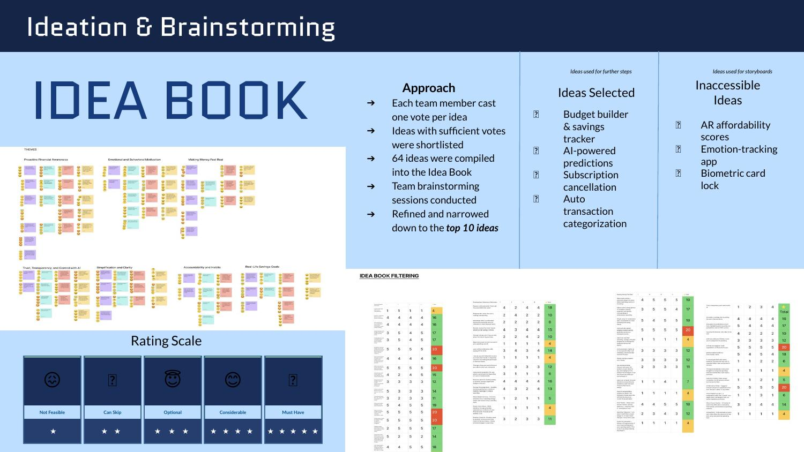
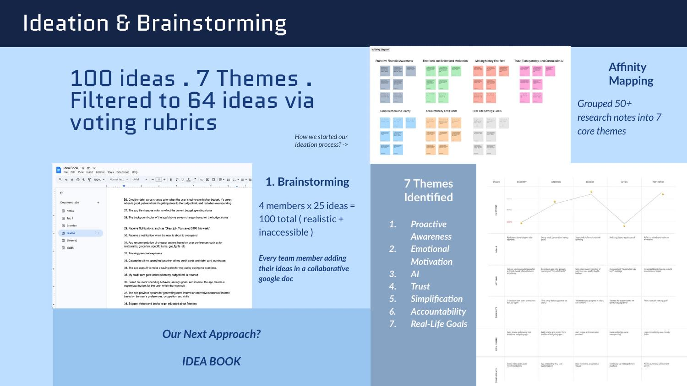
Design: from wireframes to real screens
Every wireframe carries the reason behind it: progress bars because graphs caused stress, a chat because a dashboard reads like a report card, auto-categorizing because manual logging was where people gave up.
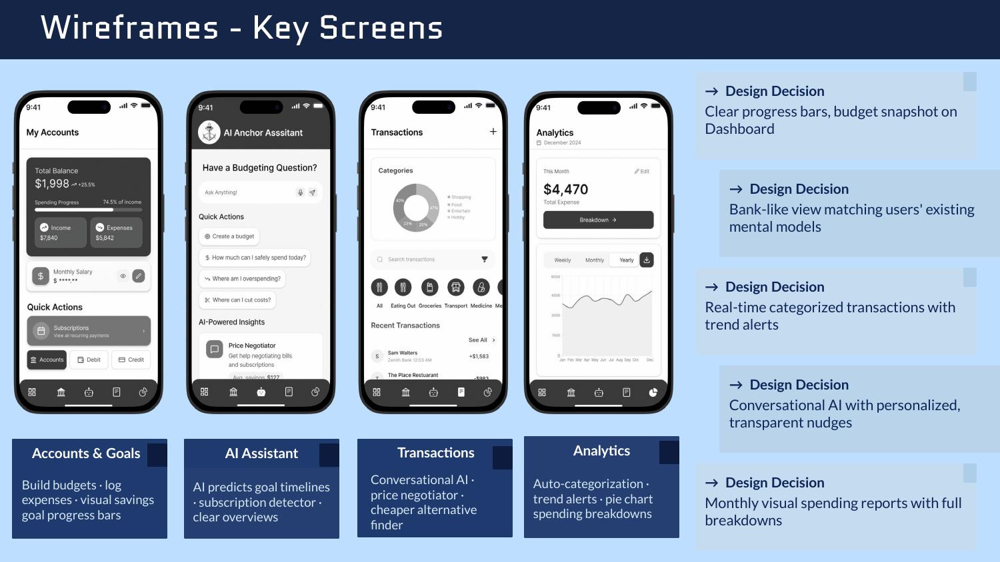
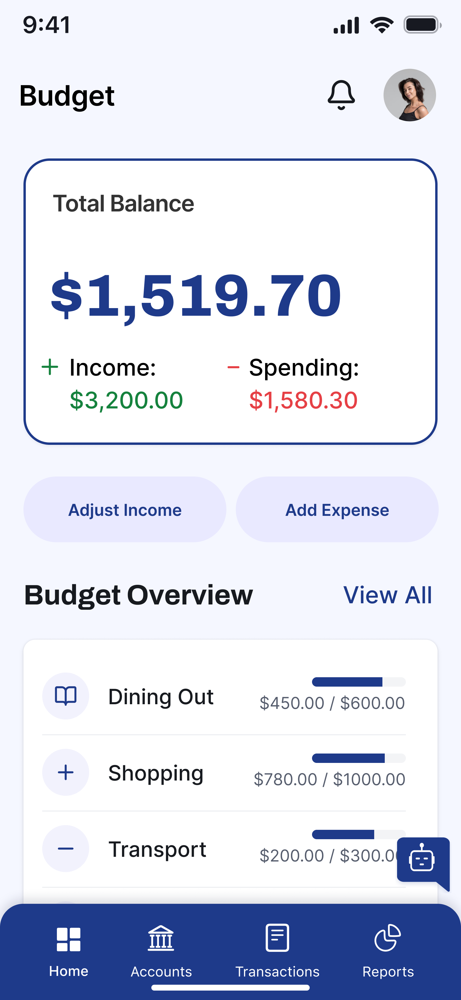
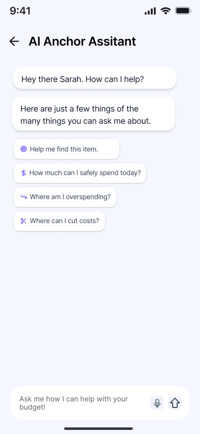
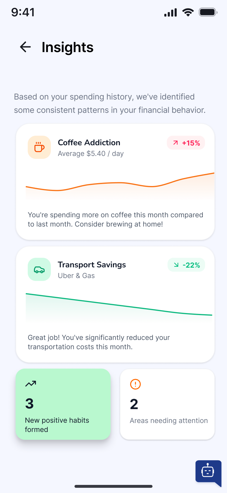
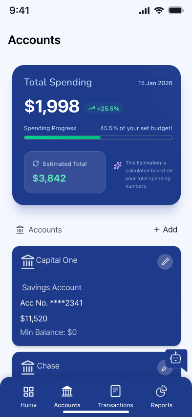


Testing: two rounds, real fixes
In round one, only 22% finished the "explore the app" task, with a 29% misclick rate. People missed the AI because it looked like part of the nav bar.
- The AI moved out of the nav bar into a floating chat bubble.
- The "+" and "-" buttons people misread became "Adjust Income" and "Add Expense".
- "Why this suggestion?" became the clearer "See AI Explanation".
In round two, the same task hit 100% success with no misclicks.
What we proved, and what I learned
- 75%completely trusted the AI after seeing its explanation.
- 22% → 100%success on the "explore the app" task after round one's fixes.
- 4.4 / 5ease of use, as rated by round-two testers.
- 54.7%misclicks on adjusting a budget, so that flow still needs work.
What people say isn't what they do
Testers rated ease 4.4 out of 5 while misclicking more than half the time on one task. I trust the measured number.
Make the key feature impossible to miss
Our most important feature was invisible in round one because it looked like navigation.
Explain the AI
People want the "why" behind a suggestion, and control over it, not orders.